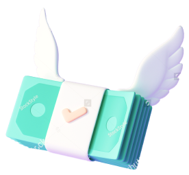

Знаете ли вы, что:
Для удвоения суммы вложений инвестируя в акции, в среднем необходимо 10 лет. При этом риск уйти в минус за тот же срок составляет 18%.
Депозиты в банках дают проценты ниже уровня инфляции. Поэтому вкладчики постоянно теряют покупательскую способность вложенных средств, несмотря на увеличение суммы депозита.

Токены ZLW обеспечивают доходность в разы больше
ZLW токен - это крипто-актив, объединяющий проекты компании Zelwin в единую экосистему.
Средства, вложенные в ZLW, распределяются между проектами, снижая риски инвесторов и повышая стабильность токена.
Рыночная капитализация ZLW по данным из открытых источников
$ 503 343 243
Покупка / продажа ZLW через обменник:
Перейти на ex.zelwin.comПросто купив токены ZLW, Вы:
Токен вышел на биржи с ценой $0.92. Через год его цена выросла более чем в 7 раз.
Возможная доходность от вложений
Текущие ставки по стейкингу составляют от 98 до 129% годовых
Возможная доходность от вложений
Покупка токенов с проведенных IDO принесла инвесторам от 200% до 1400% прибыли
Возможная доходность от вложений
5 методов монетизации проекта
Мы получаем деньги от покупателей, а также комиссии от торговцев
Где все стороны (инвесторы, стартапы, наши Платформы) могут хорошо зарабатывать
Позволяющие инвесторам, стартапам, и нашим платформам хорошо зарабатывать
Наши пользователи обменивают криптовалюту на ФИАТ, а ФИАТ на криптовалюту. Мы получаем комиссию за обмен в обе стороны.
Мы не проводили ICO, IEO, pre-sale, airdrops, не давали скидок и т. д. Все разработки выполнялись за собственные средства. Поэтому ничто не влияет на нашу цену сейчас! И мы растем без всякого давления
Почему Zelwin?

Надежность ZLW токена обусловлена множеством проектов, включенных в нашу экосистему.
Диверсифицируя (распределяя) средства между разными финансовыми инструментами
Токен ZLW, а также финансовые инструменты, предоставляемые компанией Zelwin, работают на смарт-контрактах, открытых для публичного доступа.
Zelwin - проект с прозрачной бизнес-моделью и работающими IT продуктами, приносящими прибыль. Мы категорически против нелегальных финансовых моделей.
Отзывы
У нас на бирже более 700 000 активных пользователей, и вместе с zelwin мы расширяем наше сообщество болееУ нас на бирже более 700 000 активных пользователей, и вместе с zelwin мы расширяем наше сообщество болееУ нас на бирже более 700 000 активных пользователей, и вместе с zelwin мы расширяем наше сообщество более
Zelwin – лучший проект 2020 года! И я вижу, как экосистема Zelwin растет и развивается в 2021. Уверен, что в ближайши У нас на бирже более 700 000 активных пользователей, и вместе с zelwin мы расширяем наше сообщество болееУ нас на бирже более 700 000 активных пользователей, и вместе с zelwin мы расширяем наше сообщество более
Я вижу, что появляется целая экосистема следующего поколения – ZELWIN.У нас на бирже более 700 000 активных пользователей, и вместе с zelwin мы расширяем наше сообщество болееУ нас на бирже более 700 000 активных пользователей, и вместе с zelwin мы расширяем наше сообщество болееУ нас на бирже более 700 000 активных пользователей, и вместе с zelwin мы расширяем наше сообщество более
ZELWIN – один из лучших вариантов использования блокчейна для простоты, скорости и снижения затрат на платежи, управление цепочкой поставок и предотвращение мошенничества с контрафактными товарами. У Zelwin есть четкий путь к совершенствованию этих систем и обеспечению потребителей более безопасным и продвинутым рынком.
Zelwin - это блестящий, свежий, прорывной подход к объединению цифровых активов с реальным сектором экоУ нас на бирже более 700 000 активных пользователей, и вместе с zelwin мы расширяем наше сообщество болееУ нас на бирже более 700 000 активных пользователей, и вместе с zelwin мы расширяем наше сообщество более
Zelwin.Finance выполняет очень важную функцию в регулировании отношений между перспективными проекZelwin.Finance выполняет очень важную функцию в регулировании отношений между перспективными проекУ нас на бирже более 700 000 активных пользователей, и вместе с zelwin мы расширяем наше сообщество более
Как начать зарабатывать с Zelwin?
Купите токены ZLW и зарабатывайте на потенциальном росте курса токена.
Минимальная сумма покупки $20
Купить Вложить ZLW в программу стекинга
Вложить ZLW в программу стекингаПоложите ваши ZLW токены на крипто-депозит и получайте до 129% годовых.
Для участия в программе стейкинга необходимо иметь не менее 100 ZLW
ИнвестироватьЗа совершение любых покупок на маркетплейсе вы получите ZLW токены.
Токены будут начисляться за покупки на любую сумму
Начать покупки Рекомендовать Zelwin друзьям
Рекомендовать Zelwin друзьямУчаствуйте в партнерской программе и получайте токены ZLW за покупки друзей и/или продажи магазинов.
Друзья, пришедшие по вашей ссылке, будут получать за покупки в 2 раза больше токенов
ЗарегистрироватьсяМедиа о нас
Экосистема проекта
Zelwin интегрировала операции с криптовалютой в нашу повседневную жизнь, объединив реальные секторы экономики и цифровые активы. Ограничений на покупки больше нет - Zelwin работает по всему миру, а токены можно купить прямо на сайте.
Zelwin.com
Zelwin.Games
Ex.Zelwin.com
Zelwin.Finance
Zelwin Finance сочетает в себе финансовые инструменты, которые открывают уникальные возможности заработка для держателей токенов ZLW.
Zelwin Launchpad - это платформа, которая помогает командам проектов и дает им советы о том, как лучше всего презентовать свой токен.
Мы предлагаем полный спектр услуг, начиная от консультационных услуг до выпуска токена и заканчивая пост-листингом и маркетинговой поддержкой.
Перейти к Zelwin.FinanceZELWIN - это простой и надежный сервис обмена валют, где вы можете покупать и продавать криптовалюты с помощью VISA / MasterCard. Для этого не нужно быть профессиональным трейдером. Воспользоваться сервисом не составит труда даже начинающим покупателям криптовалюты.
Обменивайте свои деньги и цифровые активы неограниченное количество раз.
Перейти к Ex.Zelwin.comНа платформе более 1500 игр
ZELWIN.GAMES - это онлайн-платформа - маркетплейс игр с открытой системой API и документацией, листинг на которую, как и в Telegram, доступен каждому разработчику игр.
Перейти к Zelwin.GamesМаркетплейс товаров, который объединил цифровые активы и электронную коммерцию в единое целое.
Огромным преимуществом этой платформы является то, что за каждую покупку покупатели получают гарантированный кэшбэк в токенах ZLW.
Они могут мгновенно обменять эти токены на различные криптовалюты, USD / EUR, отправить их на VISA / MasterCard или сохранить в своем крипто-кошельке.
Перейти к Zelwin.comПартнеры проекта
Купить токены ZLW можно на сумму от $20
ZLW торгуются на 7 биржах, вернуть вложенные средства можно в любой момент
Все условия работы сервисов указаны в публичных смарт-контрактах, изменить их не могут даже разработчики